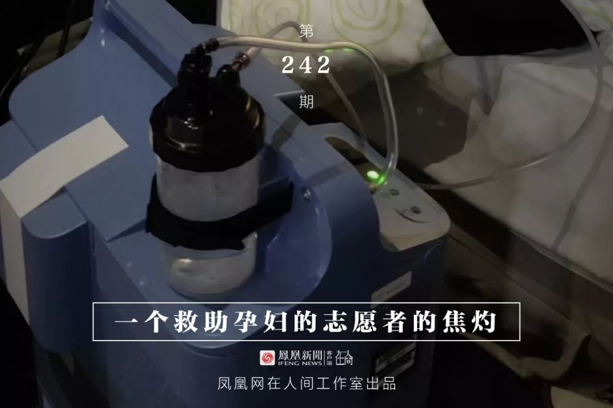
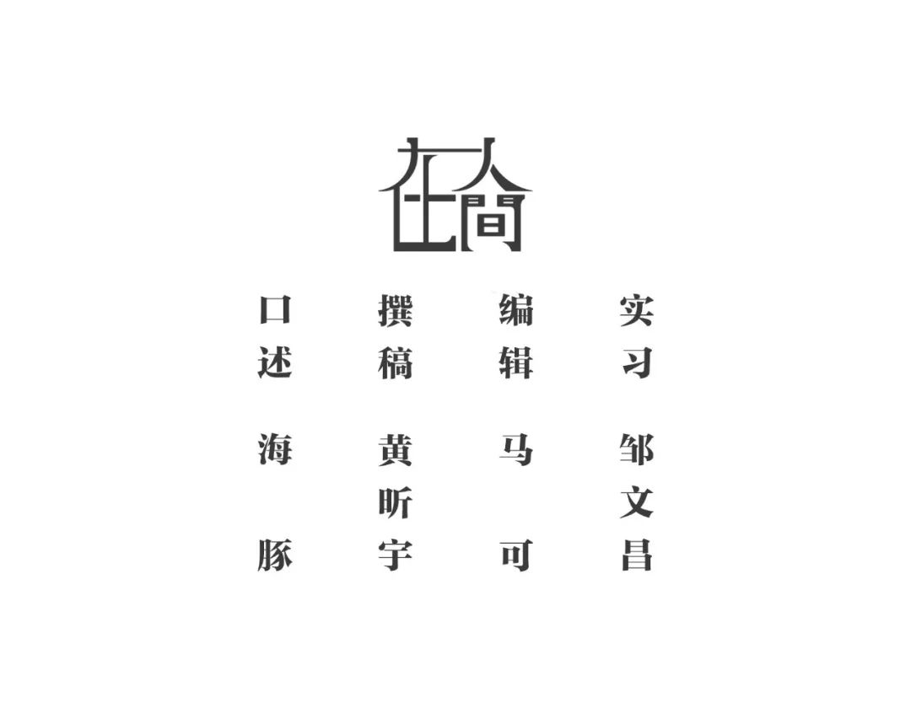

女子从武汉回来21天后无发热症状，第4次才确诊
原文链接 备份链接 澎湃新闻记者 宋江云 2月12日晚，九江学院附属医院官方微信公号消息，2月11日，九江学院附属医院新确诊一例特殊的新型冠状病毒肺炎病例。该病例无发热症状，隐匿性强，在确诊前曾三次核酸检测均呈阴性，第四次核酸阳性方最终确 …


凤凰新闻客户端 凤凰网在人间工作室出品
1月22日，有一个叫卓明灾害信息服务中心的团队成立了nCoV志愿者联盟，发起人是我的朋友。
在这个大志愿者联盟里，有300多个在线医生，组成了一个综合各科在线治疗的团队；微信群里有两三百个做心理支持的社工和咨询师，还有负责搜索信息、物资对接、协调管理的志愿者团队。
我在23号加入，做心理支持。根据以往的救灾经验，我知道心理支持应该放在靠后阶段，当前任务是紧急救援。我发现孕妇这个特殊群体急需帮助，就成立了专门救助孕妇的团队。
我们孕妇团队差不多有四五十人。我们和孕妇、医护人员都在一个大群里。有一个信息组，专门收集跟孕妇有关的就医、就诊资料。各个医院的床位信息，我们两天一更新。这个过程很难，因为很多电话都打不通。此外，我们还分别设了临产群、药物群、非感染孕妇群这样的小群，孕妇们也会在里面互助，共享信息。
在线医疗支持起的作用是非常大的。比如说谁拍了片子发过来，我们马上转给医生看，医护群里有呼吸、重症、感染、心脏……各个科室的医生，同时看片子，综合会诊。这个结果反馈给病患的速度比他在医院排半天队快很多。医生在线跟病人沟通时，是有情感联结的，是可以加油鼓劲的，对于孕妇和很多重症病患，能给到很多心理上的安慰和支持。
1月28日，武汉卫健委下发文件《关于做好新冠肺炎疫情期间特殊病人医疗保障工作的通知》，指定了四家接受确诊和疑似孕产妇病人的定点医院。但不是一纸文件指定下来就行的，医院需要有条件的产房能做手术，需要有隔离病房，要有足够的防护物资。
文件下来后，我们志愿者打电话过去，四家定点医院里，三家明确答复不收，没有条件。只有协和西院说，他们收，但是必须等病房改造完。协和西已经很负责任，收过很多孕妇了。他们的床位非常紧张，而且那些天他们的物资一直被卡，一直是紧缺状态。你让医护人员怎么面对这些问题？
可是孕妇和家属没法理解医护人员的状况。她们发着烧，即将临产，随时担心肚子里的胎儿有生命危险，谁来理解她们呢？她们遇到的状况就是到处被拒收。
我们团队很多人是做心理支持的，不过现在都在做什么？都在寻医问药。找床位是我们工作里非常重要的一部分。对于情况紧急的孕妇家庭来说，你让他们几十个电话一个个打，还打不通，他们会很绝望。我们这么多人来帮忙，就会容易一点儿。我们在沟通表达上也有经验，知道怎么突出重点、清晰地介绍病情，用我们的话术在他们和社区、医院的沟通中起润滑剂和桥梁的作用。
他们本来很孤单，感觉这个家庭被抛弃了，到处求医无门。现在看到有我们，有人在陪伴他们，心理上也会缓解很多。他们就可以重新恢复能力，积极地找办法，而不至于越来越无力。

1月31日，一个马上要生的感染孕妇联系到我们，情况很危急。我们直接对接协和西院。医院告诉我，病产房还没改造好，再过一两天改造好了就能收。当时我得到消息，很多防护物资那天晚上到达武汉，会送到医院。
第二天我就让这两口子去协和。那时他们已经跑了好几趟医院，经历了到医院被拒收，打120总是打不通，没车回家的状况，非常绝望，不想再打120了。我跟他们发脾气，逼着他们打120。运气很好，120打通了，把他们送过去，病房又正好改造好，夫妻两个人都住进去了，顺利生下来一个7斤男孩。
这是个喜讯啊。有了这个成功案例，是不是说明以后大家都能去协和西？我跟市妇联、省妇联联络，大家都在上报这个流程。结果再来一个危急孕妇，你发现还是不行，这个通道仍然没有打通。
2月3日晚上9点多钟，一位黄陂孕妇的丈夫加我微信。他老婆怀孕34周，发烧38.4度，已经连续发烧十几天，气喘一天比一天严重，是高度疑似病患。我立刻开始帮她联系医院，同时找在线产妇科医生。医生认为，孕妇高热本身就很容易导致胎儿窒息，需要紧急就医。她怀孕34周，虽然胎儿成形了，但还是偏小，可能早产，状况危急。
这对夫妻要跑医院，又没有车。他们家一个能跑车的朋友冒险一趟趟送他们去医院。
他们联系我们之前，先去了黄陂人民医院，医院拒收。他们又去湖北省人民医院东院，要求必须有黄陂人民医院开的转院证明。但是他们没在黄陂住院呀，人家怎么开转院证明？事实上，人民东院也没有病床。
4号凌晨他们又去中南医院，在那儿做了核酸检测，要等两三天才能出结果。中南医院不是定点医院，也不收治。到4号早上，我们打通了协和西院的电话，医院说这种情况是收的。我赶紧让他们去，结果还是不收。我觉得不收是因为没有病床，产房没有改造完，医生的防护装备也不够。更重要的是，那时她还没有确诊，还在等核酸检测结果。可是她产程很紧急，怎么办呢？
4号那天我还接到一例。孕妇怀孕39周，已经见红了。她不发热，只是有点咳嗽，在省妇幼医院做了CT，显示可能有点感染。省妇幼不是定点医院，很明确地告诉她不能收治，即使核酸检测出来是阴性也不能收。她问了中南医院，不收。又问了人民东院，人民东院说她是轻症，不收，害怕她进去以后被感染得更严重，而且也没有床位。可她39周见红了啊，如果宫缩再强烈一些怎么办？
她去省妇幼的路上，我就找正在接受隔离的一个产科副主任在线跟她沟通。医生告诉她，见红的情况下，可能三天内生，也可能一个星期才生，别着急，一直努力稳定她的情绪。可如果她就当晚要生呢？她没有确诊，哪个医院收她？
我从救助第一个孕妇开始，就发现整个就诊流程如此混乱。我面对一堆医院，到底打哪个电话？我查了一堆文件，有针对性地打，发现没有一家医院改造好。我再问医院，怎么才能收治？他们说，必须确诊。那什么是确诊？你得照CT、做血检，CT确诊显示是疑似，然后做核酸检测。好，我们查出能做核酸检测的医院，又告诉你没有试剂盒，得排队等。做完检测你还要等上一两天才出结果。可是孕妇已经胎动减少，胎儿可能很危险，她怎么等呢？
4号那天，那两个紧急案例一直解决不了。我太着急了，给省妇联打了好多电话，把情况丢过去，他们也急了。他们自己也接到好多求救，一直在协调社区，社区也没有办法。那天我电话里就直接说，孕妇的就诊流程到底是怎样呢？如果你们不能确定一个明确能收疑似或者感染孕妇的医院，这条通道永远打不开。永远都在一个一个救，救不过来的，遇上棘手的怎么办？

孕妇的就诊流程其实很快大家都知道：先做血检、CT，CT显示感染后做核酸检测，核酸检测呈阳性确诊，然后联系医院。
但问题就卡在确诊上。政策是核酸检测确诊才能进定点医院。但凡CT有一点感染症状，一个普通的省妇幼、市妇幼怎么敢收治呢？而很多人CT显示感染，但核酸检测是阴性，没法确诊，又不能进定点医院，就没有医院收了。你只好再跑一次核酸检测，再等结果，前前后后就得将近10天。
这些疑似或确诊孕妇家庭可能没有车，大老远跑去医院，不能救治，又跑去另一家医院。这样一来感染源不是一直在移动吗？有的患者家属看起来还是健康的，可你让他一遍遍跑，过程中不会被感染吗？
有时我们接到求助，让孕妇拿胸片给在线医生看，明确是感染的。再一问，她老公也是疑似，家里好几个人都有咳嗽发烧症状。
床位不够，病人太多。那时政府让人居家隔离，但没有提供任何消毒措施和隔离指导措施。普通人怎么会有经验做居家隔离呢？最多戴口罩，如何保证和家人百分百没有接触？这往往造成家庭聚集性感染。一旦他们发烧、咳嗽，一定又得跑去医院，来回跑确诊流程。交叉感染数字会越来越高。
感染孕妇走完确诊这一步又怎么样呢？找到医院，说你还没有破水，还没有到最紧急的程度，我不能收你。医院也没有办法，他们就是没有床位，没有防护物资和设备，这不是医院的问题。医护人员已经是用命在拼了。
我这边接到好几个危急情况。怀孕三十八九周，连续长时间高烧，肚子疼，还有见红的。这种状况平时你去任何一家医院，马上就急诊留院观察，看几天要生了。现在没有，医院让你做个胎心监护，说还算正常，你回家等着吧。
志愿者只能一个一个医院打电话去碰，看哪个医院正好有产房又有病床，而且你又有检测结果了，把你加进去。那几天能被医院收治，真的是碰运气。
我真的很想停下来这种一个一个救的办法。我当时就想，孕妇是非常特殊的群体，是不是应该有个优先通道？疑似孕妇能不能不用核酸检测，就用CT直接确诊？指定了定点医院，是不是可以留一些床位给疑似和确诊的孕产妇？但我说这个话的时候，自己都觉得，怎么能这样？人的生命不都一样吗？你说老人，不重要不危急吗？可孕妇真的是一个特殊群体，而医疗资源和就诊体系就是紧张、混乱到了这个程度，我真的很为难。

2月4号那天，我从早晨7点钟到晚上，手机就没有放下来，连吃饭都拿着，随时等消息，不断地联系。一整天下来，那两个孕妇还是进不了医院。我真的很绝望。孕妇家属也很绝望。这时候你怎么可能给他们做心理疏导呢？我自己平时也做正念练习，但那天我看网上好多团队要指导病患家庭做正念练习，我真的想骂人——他老婆发着高烧，气都喘不上来了。
我觉得自己在心理救援、危急干预上算老手了。2008年地震救援，还有日常很多自杀干预、重度抑郁症干预，我都没有过这回那么强的无力感。2008年地震，你身边一个个还活蹦乱跳的人，突然死了，这是巨大的一个冲击。他们很绝望，在求救，但同时也能看到非常多的资源、物资和队伍进来帮助他们。
这回疫情，病人在求救的过程中觉得自己被放弃了。病患面对的整个体系非常混乱，他们感觉不到社会的支持。防护物资都给到医院，这是大家都能理解的。但是日常生活和出行能保障吗？交通都停了。大家能理解，这是为了不让我们出去传染给别人。可是我们得去医院，得生存啊。你说社区提供车辆，可我排不上队，难道我在家等死吗？然后我到了医院，也没给我药，也没有打针。我CT显示感染成这样了，去排队做核酸测试，又拿不到试剂盒。好不容易测试完了，我还是迟迟不能入院。那种步步维艰的感觉真的让人很绝望。
有的家庭已经死了一个人，他们产生的那种恐慌是，“我没办法帮到他，他死了，那下一个会是我吗？”你看着身边的家人病了，你也去医院了，该打的电话都打了，甚至平时不做的事都做了，不找的人都找了——没有用，你就看着这个人一天天不行，到最后去世。而且不是一个人，是家里面一个接一个。这给人带来的创伤太大了。他们会觉得很恐慌、悲伤、绝望，甚至愤怒。
我们很多志愿者都会被带到这种绝望的情绪里。有的志愿者在线上救援时，求救的人马上呼吸就要衰竭了，你一边指导他，鼓励他，一边一群人急着叫120。车还没叫到，你眼睁睁地看着他就不行了。一个没见过的人，隔着这么远向你求救，这个人说没就没了。可是没了之后呢？家属也没有悼念的过程，自己又需要被隔离。这种哀伤和创伤真的很强烈。现在还是应激状态，要看疫情过后的恢复了。
好多志愿者夜里跟我说，好难受啊。我特别心疼那些一腔热情又没什么经验的年轻志愿者。有一天，我都跟团队里亲近的朋友发脾气。我说你让这样一群年轻人来做这件事，你真的很不负责任。我自己有时候哭一场，第二天还能再振作。可他们没有受过训练，这可能会给他们带来很大创伤。我们线上那些医生平时死亡见多了，这次他们也受不了。他们也要在晚上出去喘口气，透透风。每天大家在群里有很多情绪宣泄，也需要给彼此支持。
4号那天晚上，我觉得心太紧了。我需要缓一下，让自己哭了一场。第二天我发了条朋友圈，说我今天休息。那天，我处理了一些手边的文字工作，做了一些老人和重症病患的心理支持。然后一个孕妇的老公就来了条微信，“我今天能打扰你一下吗？”他看到我那条朋友圈，就真的特别不好意思。我说，你随时可以打扰我，这都不算打扰。
8号下午还有个病患，算是这些天以来比较有意思的一个。那天护士通知他，收拾东西转院，120一会儿就来，也没告诉他转哪儿。他就给我发个微信说：“我要上救护车了，我都不知道去哪儿。”我当时有点着急，但还是会打趣跟他说，让他有什么情况告诉我。他说：“你放心，我第一时间告诉你。”然后他一路上随时跟我通报，到哪儿了，又到哪儿了。到了医院还跟我说：“现在进医院了，但是还要等，进了病房我再告诉你。”过一会儿又来一条：“进病房了，我觉得条件还不错。”
我能感受到这些病患和家属对我们的需要和感激。一个生病的人在这种混乱的状况下，会很不安。这个时候你跟他的沟通，就让他觉得，还有一个人是跟他在一起的。

4号见红的那位感染孕妇，在2月5日终于在人民东院剖腹生了，母子平安。34周的那位黄陂孕妇，又打了一天电话。到了6号，社区通知他们可以去黄陂人民医院。到医院做了胎心监护，又复查CT，医生判断可能要提前剖腹产。但是黄陂这边没有条件做，于是开了转诊单，又转到了协和西院。第二天下午，她在协和西院剖腹生产。孩子送到儿童医院隔离看护，做进一步观察。
这个时候出生的孩子，都好坚强。
到了这几天，孕妇就诊虽然没有真正形成一个有优先权可言的就诊通道，但难度小了很多。之前，医院的病产房、防护物资和装备，都不具备收治条件。只能在最后关头，把孕妇硬挤到一个能收她的医院里。现在，志愿者依然每天打电话跟医院核实是否能收孕妇，医院还没有公开说可以收，电话也经常打不通。但是，从这几天的情况看，比较紧急的孕妇做核酸检测是能优先排的。由社区来对接，只要能做胎心检测的医院，是不会拒绝孕妇的，然后由医生判断是否住院生产或者转院。没有再出现之前几天那么艰难，求助无门的危急情况了。
现在，基本上不由我们直接帮孕妇找医院。我们的工作变成帮他们跟社区反映情况，同时提供在线医疗支持，也会指导她们怎么跟医院描述病症。这几天，没有原来那样满天飞的救助信息，我早上起来都不那么紧张了，一下子还有点不适应。
现阶段的情况看，病患能不能看上病，社区是最关键的一个环节，所有病患的床位几乎都由社区跟医院对接。黄陂这个妈妈最后能进医院，是由社区联系上的。所以遇到紧急的病人，志愿者就需要不断骚扰社区，随时通报这个人的病情，可能就有机会往前排一排，更快找到床位。我们跟市妇联通报紧急病例，他们也是跟社区打电话，让社区把这个病例紧急通报，把病人往前排。
开展疑似和确诊病患集中隔离之后，我们大的志愿者团队有个想法，希望做一个线上诊疗和线下医疗的对接。当时的设想是，跟每个隔离区的社区联络，让我们的线上医生能够看病患的CT片，判断是否确诊，是不是需要转院，而不是让社区去判断病人的轻重缓急。但这个想法没法推进，很多部门对接不上，社区也不理我们。我觉得目前的情况是，各机构没有统筹工作的机制，大家都各干各的。
开展集中隔离之后，我们的救助进入到了新阶段。各个隔离区的条件很不一样，我们现在还没有摸清楚，社区是按什么标准来分配病人的。
有一个我跟了两三天的病人，他看到隔离区没有消毒，就一层一层上报，打所有能打的电话。那天，他高烧39度，根本吃不下饭，还是很努力去吃。他吃了退烧药以后出很多汗，一出汗就很烦躁。他说：“我不是焦虑症吧？”我说：“你只是在很努力地治病，让自己好起来。”
在疫区的每一个病患都在努力求生。



新型肺炎疫情牵动人心，
《在人间》现面向全国网友征稿：
（一） 疫区影像日记
如果你身处疫区
请你用照片（视频）和文字记录
你所听闻和见到的一切
照片不少于3张
文字不少于300字
投稿方式：微信联系人间君（zairenjianliving）
（二）抗击疫情真实故事
无论你是一线医护人员、志愿者、
确诊或疑似患者及家属、已治愈出院人士等等，
如果希望讲述疫情相关经历，
请微信联系人间君（zairenjianliving）

原文链接 备份链接 澎湃新闻记者 宋江云 2月12日晚，九江学院附属医院官方微信公号消息，2月11日，九江学院附属医院新确诊一例特殊的新型冠状病毒肺炎病例。该病例无发热症状，隐匿性强，在确诊前曾三次核酸检测均呈阴性，第四次核酸阳性方最终确 …
原文链接 备份链接 伴随着火神山、雷神山医院开始收治病人，15家方舱医院陆续启动， 各省医疗队开赴武汉，武汉所有确诊患者与疑似病例都将“应收尽收”。 在人类抗击疫病的历史上，“武汉会战”已成为一场史无前例的超级行动 图/新华、中新 武汉 …
原文链接 备份链接 “时间就是生命，收治工作刻不容缓，必须争分夺秒，全力以赴救治患者。”近日，中央赴湖北指导组就新冠肺炎防治连续发出指示，要真正做到应收尽收、不漏一人。 然而，记者了解到，武汉的社区和医院仍处于过载状态，许多无法得到及时救 …
原文链接 备份链接 来源：雪球App，作者： 八点健闻，（https://xueqiu.com/1553077980/140215390） 岳父发烧9天 ，妻子发烧6天 ，CT报告都显示“双肺严重感染” ，却一直没能得到检测 ，确认是不是 …
原文链接 备份链接 澎湃新闻特约撰稿 张小莲 记者 任雾 实习生 蓝泽齐 这几天，江强（化名）明显感到工作进入“快车道”了。 居委会陆续来了增援的人，“应收尽收”的“死命令”下来，送病人做核酸检测、收治隔离，前些天最挠头的这些事，也畅通多 …